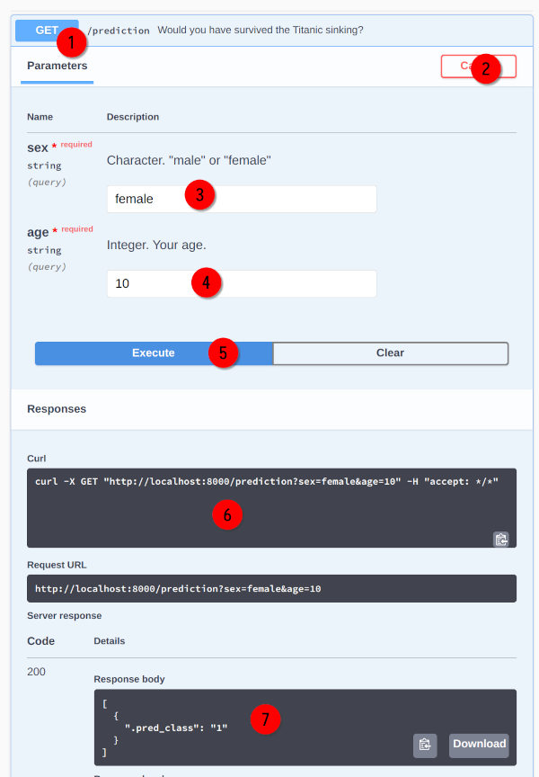
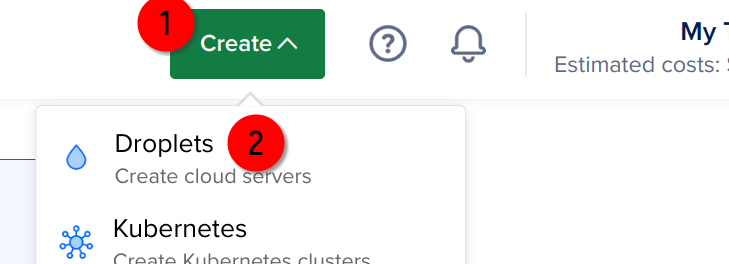
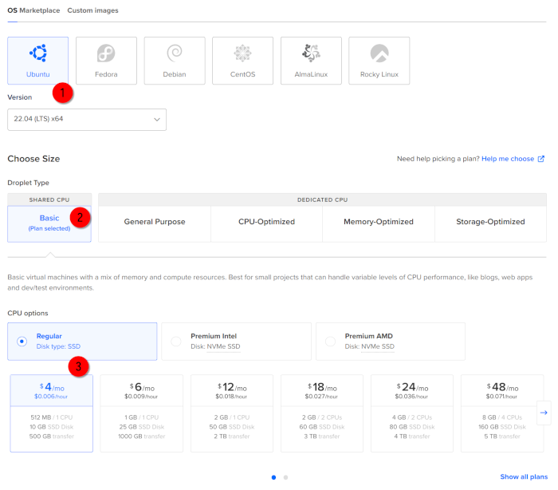
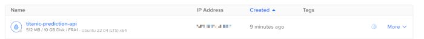
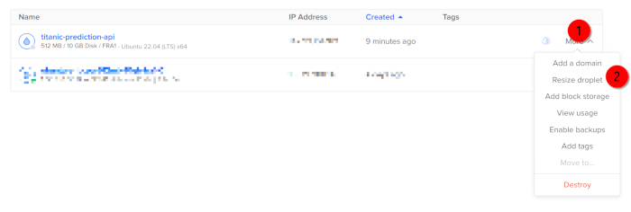
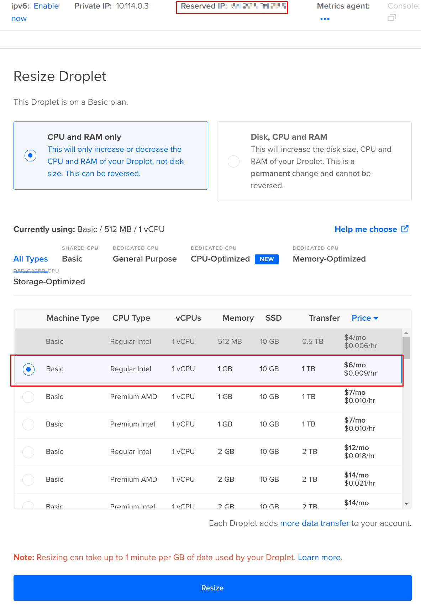

Reproducible data science with Nix, part 3 – frictionless {plumber} api deployments with Nix

This is the third post in a series of posts about Nix. Disclaimer: I’m a super beginner with Nix. So this series of blog posts is more akin to notes that I’m taking while learning than a super detailed tutorial. So if you’re a Nix expert and read something stupid in here, that’s normal. This post is going to focus on R (obviously) but the ideas are applicable to any programming language.
This blog post is part tutorial on creating an api using the {plumber} R package, part an illustration of how Nix makes developing and deploying a breeze.
Part 1: getting it to work locally
So in part 1 I explained what Nix was and how you could use it to build reproducible development environments. In part 2 I talked about running a {targets} pipeline in a reproducible environment set up with Nix, and in this blog post I’ll talk about how I made an api using {plumber} and how Nix made going from my development environment to the production environment (on Digital Ocean) the simplest ever. Originally I wanted to focus on interactive work using Nix, but that’ll be very likely for part 4, maybe even part 5 (yes, I really have a lot to write about).
Let me just first explain what {plumber} is before continuing. I already talked about {plumber} here, but in summary, {plumber} allows you to build an api. What is an api? Essentially a service that you can call in different ways and which returns something to you. For example, you could send a Word document to this api and get back the same document converted in PDF. Or you could send some English text and get back a translation. Or you could send some data and get a prediction from a machine learning model. It doesn’t matter: what’s important is that apis completely abstract the programming language that is being used to compute whatever should be computed. With {plumber}, you can create such services using R. This is pretty awesome, because it means that whatever it is you can make with R, you could build a service around it and make it available to anyone. Of course you need a server that actually has R installed and that gets and processes the requests it receives, and this is where the problems start. And by problems I mean THE single biggest problem that you have to deal with whenever you develop something on your computer, and then have to make it work somewhere else: deployment. If you’ve had to deal with deployments you might not understand why it’s so hard. I certainly didn’t really get it until I’ve wanted to deploy my first Shiny app, many moons ago. And this is especially true whenever you don’t want to use any “off the shelf” services like shinyapps.io. In the blog post I mentioned above, I used Docker to deploy the api. But Docker, while an amazing tool, is also quite heavy to deal with. Nix offers an alternative to Docker which I think you should know and think about. Let me try to convince you.
So let’s make a little {plumber} api and deploy that in the cloud. For this, I’m using Digital Ocean, but any other service that allows you to spin a virtual machine (VM) with Ubuntu on it will do. If you don’t have a Digital Ocean account, you can use my referral link to get 200$ in credit for 60 days, more than enough to experiment. A VM serving a {plumber} api needs at least 1 gig of RAM, and the cheapest one with 1 gig of ram is 6$ a month (if you spend 25$ of that credit, I’ll get 25$ too, so don’t hesitate to experiment, you’ll be doing me a solid as well).
I won’t explain what my api does, this doesn’t really matter for this blog post. But I’ll have to explain it in a future blog post, because it’s related to a package I’m working on, called {rix} which I’m writing to ease the process of building reproducible environments for R using Nix. So for this blog post, let’s make something very simple: let’s take the classic machine learning task of predicting survival of the passengers of the Titanic (which was not that long ago in the news again…) and make a service out of it.
What’s going to happen is this: users will make a request to the api giving some basic info about themselves: a simple ML model (I’ll go with logistic regression and call it “machine learning” just to make the statisticians reading this seethe lmao), the machine learning model is going to use this to compute a prediction and the result will be returned to the user. Now to answer a question that comes up often when I explain this stuff: why not use Shiny? Users can enter their data and get a prediction and there’s a nice UI and everything?!. Well yes, but it depends on what it is you actually want to do. An api is useful mostly in situations where you need that request to be made by another machine and then that machine will do something else with that prediction it got back. It could be as simple as showing it in a nice interface, or maybe the machine that made the request will then use that prediction and insert it somewhere for archiving for example. So think of it this way: use an api when machines need to interact with other machines, a Shiny app for when humans need to interact with a machine.
Ok so first, because I’m using Nix, I’ll create an environment that will contain everything I need to build this api. I’m doing that in the most simple way possible, simply by specifying an R version and the packages I need inside a file called default.nix. Writing this file if you’re not familiar with Nix can be daunting, so I’ve developed a package, called {rix} to write these files for you. Calling this:
rix::rix(r_ver = "4.2.2",
r_pkgs = c("plumber", "tidymodels"),
other_pkgs = NULL,
git_pkgs = NULL,
ide = "other",
path = "titanic_api/", # you might need to create this folder
overwrite = TRUE)generates this file for me:
# This file was generated by the {rix} R package on Sat Jul 29 15:50:41 2023
# It uses nixpkgs' revision 8ad5e8132c5dcf977e308e7bf5517cc6cc0bf7d8 for reproducibility purposes
# which will install R version 4.2.2
# Report any issues to https://github.com/b-rodrigues/rix
{ pkgs ? import (fetchTarball "https://github.com/NixOS/nixpkgs/archive/8ad5e8132c5dcf977e308e7bf5517cc6cc0bf7d8.tar.gz") {} }:
with pkgs;
let
my-r = rWrapper.override {
packages = with rPackages; [
plumber tidymodels
];
};
in
mkShell {
buildInputs = [
my-r
];
}
(for posterity’s sake: this is using this version of {rix}. Also, if you want to learn more about {rix} take a look at its website. It’s still in very early development, comments and PR more than welcome!)
To build my api I’ll have to have {plumber} installed. I also install the {tidymodels} package. I actually don’t need {tidymodels} for what I’m doing (base R can fit logistic regressions just fine), but the reason I’m installing it is to mimic a “real-word example” as closely as possible (a project with some dependencies).
When I called rix::rix() to generate the default.nix file, I specified that I wanted R version 4.2.2 (because let’s say that this is the version I need. It’s also possible to get the current version of R by passing “current” to r_ver). You don’t see any reference to this version of R in the default.nix file, but this is the version that will get installed because it’s the version that comes with that particular revision of the nixpkgs repository:
"https://github.com/NixOS/nixpkgs/archive/8ad5e8132c5dcf977e308e7bf5517cc6cc0bf7d8.tar.gz"
This url downloads that particular revision on nixpkgs containing R version 4.2.2. {rix} finds the right revision for you (using this handy service).
While {rix} doesn’t require your system to have Nix installed, if you want to continue you’ll have to install Nix. To install Nix, I recommend you don’t use the official installer, even if it’s quite simple to use. Instead, the Determinate Systems installer seems better to me. On Windows, you will need to enable WSL2. An alternative is to run all of this inside a Docker container (but more on this later if you’re thinking something along the lines of isn’t the purpose of Nix to not have to use Docker? then see you in the conclusion). Once you have Nix up and running, go inside the titanic_api/ folder (which contains the default.nix file above) and run the following command inside a terminal:
nix-build
This will build the environment according to the instructions in the default.nix file. Depending on what you want/need, this can take some time. Once the environment is done building, you can “enter” into it by typing:
nix-shell
Now this is where you would use this environment to work on your api. As I stated above, I’ll discuss interactive work using a Nix environment in a future blog post. Leave the terminal with this Nix shell open and create an empty text wile next to default.nix and call it titanic_api.R and put this in there using any text editor of your choice:
#* Would you have survived the Titanic sinking?
#* @param sex Character. "male" or "female"
#* @param age Integer. Your age.
#* @get /prediction
function(sex, age) {
trained_logreg <- readRDS("trained_logreg.rds")
dataset <- data.frame(sex = sex, age = as.numeric(age))
parsnip::predict.model_fit(trained_logreg,
new_data = dataset)
}
This script is a {plumber} api. It’s a simple function that uses an already trained logistic regression (lol) by loading it into its scope using the readRDS() function. It then returns a prediction. The script that I wrote to train the model is this one:
library(parsnip)
titanic_raw <- read.csv("https://web.stanford.edu/class/archive/cs/cs109/cs109.1166/stuff/titanic.csv")
titanic <- titanic_raw |>
subset(select = c(Survived,
Sex,
Age))
names(titanic) <- c("survived", "sex", "age")
titanic$survived = as.factor(titanic$survived)
logreg_spec <- logistic_reg() |>
set_engine("glm")
trained_logreg <- logreg_spec |>
fit(survived ~ ., data = titanic)
saveRDS(trained_logreg, "trained_logreg.rds")
If you’re familiar with this Titanic prediction task, you will have noticed that the script above is completely stupid. I only kept two variables to fit the logistic regression. But the reason I did this is because this blog post is not about fitting models, but about apis. So bear with me. Anyways, once you’re run the script above to generate the file trained_logreg.rds containing the trained model, you can locally test the api using {plumber}. Go back to the terminal that is running your Nix shell, and now type R to start R in that session. You can then run your api inside that session using:
plumber::pr("titanic_api.R") |>
plumber::pr_run(port = "8000")Open your web browser and visit http://localhost:8000/docs/ to see the Swagger interface to your api (Swagger is a nice little tool that makes testing your apis way easier).

Using Swagger you can try out your api, click on (1) then on (2). You can enter some mock data in (3) and (4) and then run the computation by clicking on “Execute” (5). You’ll see the result in (7). (6) gives you a curl command to run exactly this example from a terminal. Congrats, your {plumber} api is running on your computer! Now we need to deploy it online and make it available to the world.
Deploying your api
So if you have a Digital Ocean account log in (and if you don’t, use my referral link to get 200$ to test things out) and click on the top-right corner on the “Create” button, and then select “Droplet” (a fancy name for a VM):

In the next screen, select the region closest to you and then select Ubuntu as the operating system, “Regular” for the CPU options, and then the 4$ (or the 6(, it doesn't matter at this stage) a month Droplet. We will need to upgrade it immediately after having created it in order to actually build the environment. This is because building the environment requires some more RAM than what the 6) option offers, but starting from the cheapest option ensures that we will then be able to downsize back to it, after the build process is done.

Next comes how you want to authenticate to your VM. There are two options, one using an SSH key, another using a password. If you’re already using Git, you can use the same SSH key. Click on “New SSH Key” and paste the public key in the box (you should find the key under ~/.ssh/id_rsa.pub if you’re using Linux). If you’re not using Git and have no idea what SSH keys are, my first piece of advice is to start using Git and then to generate an SSH key and login using it. This is much more secure than a password. Finally, click on “Create Droplet”. This will start building your VM. Once the Droplet is done building, you can check out its IP address:

Let’s immediately resize the Droplet to a larger size. As I said before, this is only required to build our production environment using Nix. Once the build is done, we can downsize again to the cheapest Droplet:

Choose a Droplet with 2 gigs of RAM to be on the safe side, and also enable the reserved IP option (this is a static IP that will never change):

Finally, turn on your Droplet, it’s time to log in to it using SSH.
Open a terminal on your computer and connect to your Droplet using SSH (starting now, user@local_computer refers to a terminal opened on your computer and root@droplet to an active ssh session inside your Droplet):
user@local_computer > ssh root@IP_ADDRESS_OF_YOUR_DROPLETand add a folder that will contain the project’s files:
root@droplet > mkdir titanic_api
Great, let’s now copy our files to the Droplet using scp. Open a terminal on your computer, and navigate to where the default.nix file is. If you prefer doing this graphically, you can use Filezilla. Run the following command to copy the default.nix file to the Droplet:
user@local_computer > scp default.nix root@IP_ADDRESS_OF_YOUR_DROPLET:/root/titanic_api/Now go back to the terminal that is logged into your Droplet. We now need to install Nix. For this, follow the instructions from the Determinate Systems installer, and run this line in the Droplet:
root@droplet > curl --proto '=https' --tlsv1.2 -sSf -L https://install.determinate.systems/nix | sh -s -- installPay attention to the final message once the installation is done:
Nix was installed successfully!
To get started using Nix, open a new shell or run `. /nix/var/nix/profiles/default/etc/profile.d/nix-daemon.sh`
So run . /nix/var/nix/profiles/default/etc/profile.d/nix-daemon.sh to start the Nix daemon. Ok so now comes the magic of Nix. You can now build the exact same environment that you used to build the pipeline on your computer in this Droplet. Simply run nix-build for the build process to start. I don’t really know how to describe how easy and awesome this is. You may be thinking well installing R and a couple of packages is not that hard, but let me remind you that we are using a Droplet that is running Ubuntu, which is likely NOT the operating system that you are running. Maybe you are on Windows, maybe you are on macOS, or maybe you’re running another Linux distribution. Whatever it is you’re using, it will be different from that Droplet. Even if you’re running Ubuntu on your computer, chances are that you’ve changed the CRAN repositories from the default Ubuntu ones to the Posit ones, or maybe you’re using r2u. Basically, the chances that you will have the exact same environment in that Droplet than the one running on your computer is basically 0. And if you’re already familiar with Docker, I think that you will admit that this is much, much easier than dockerizing your {plumber} api. If you don’t agree, please shoot me an email and tell me why, I’m honestly curious. Also, let me stress again that if you needed to install a package like {xlsx} that requires Java to be installed, Nix would install the right version of Java for you.
Once the environment is done building, you can downsize your Droplet. Go back to your Digital Ocean account, select that Droplet and choose “Resize Droplet”, and go back to the 6$ a month plan.
SSH back into the Droplet and copy the trained model trained_logreg.rds and the api file, titanic_api.R to the Droplet using scp or Filezilla. It’s time to run the api. To do so, the obvious way would be simply to start an R session and to execute the code to run the api. However, if something happens and the R session dies, the api won’t restart. Instead, I’m using a CRON job and an utility called run-one. This utility, pre-installed in Ubuntu, runs one (1) script at a time, and ensures that only one instance of said script is running. So by putting this in a CRON job (CRON is a scheduler, so it executes a script as often as you specify), run-one will try to run the script. If it’s still running, nothing happens, if the script is not running, it runs it.
So go back to your local computer, and create a new text file, call it run_api.sh and write the following text in it:
#!/bin/bash
while true
do
nix-shell /root/titanic_api/default.nix --run "Rscript -e 'plumber::pr_run(plumber::pr(\"/root/titanic_api/titanic_api.R\"), host = \"0.0.0.0\", port=80)'"
sleep 10
done
then copy this to your VM using scp or Filezilla, to /root/titanic_api/run_api.sh. Then SSH back into your Droplet, go to where the script is using cd:
root@droplet > cd /root/titanic_api/and make the script executable:
root@droplet > chmod +x run_api.sh
We’re almost done. Now, let’s edit the crontab, to specify that we want this script to be executed every hour using run-one (so if it’s running, nothing happens, if it died, it gets restarted). To edit the crontab, type crontab -e and select the editor you’re most comfortable with. If you have no idea, select the first option, nano. Using your keyboard keys, navigate all the way down and type:
*/60 * * * * run-one /root/titanic_api/run_api.sh
save the file by typing CTRL-X, and then type Y when asked Save modified buffer?, and then type the ENTER key when prompted for File name to write.
We are now ready to start the api. Make sure CRON restarts by running:
root@droplet > service cron reload
and then run the script using nohup followed by run-one:
root@droplet > nohup run-one /root/titanic_api/run_api.sh &
run-one will now run the script and will ensure that only one instance of the script is running (the & character at the end means “run this in the background” an nohup, which stands for “no hang-up”, ensures the command will continue running even when you close the terminal). If for any reason the process dies, CRON will restart an instance of the script. We can now call our api using this curl command:
user@local_computer > curl -X GET "http://IP_ADDRESS_OF_YOUR_DROPLET/prediction?sex=female&age=45" -H "accept: */*"
If you don’t have curl installed, you can use this webservice. You should see this answer:
[{
".pred_class": "1"
}]I’ll leave my Droplet running for a few days after I post this, so if you want you can try it out run this:
curl -X GET "http://142.93.164.182/prediction?sex=female&age=45" -H "accept: */*"The answer is in the JSON format, and can now be ingested by some other script which can now process it further.
Conclusion
This was a long blog post. While it is part of my Nix series of blog posts, I almost didn’t talk about it, and this is actually the neat part. Nix made something that is usually difficult to solve trivially simple. Without Nix, the alternative would be to bundle the api with all its dependencies and an R interpreter using Docker or install everything by hand on the server. But the issue with Docker is that it’s not necessarily much easier than Nix, and you still have to make sure building the image is reproducible. So you have to make sure to use an image that ships with the right version of R and use {renv} to restore your packages. If you have system-level dependencies that are required, you also have to deal with those. Nix takes care of all of this for you, so that you can focus on all the other aspects of deployment, which take the bulk of the effort and time.
In the post I mentioned that you could also run Nix inside a Docker container. If you are already invested in Docker, Nix is still useful because you can use base NixOS images (NixOS is a Linux distribution that uses Nix as its package manager) or you could install Nix inside an Ubuntu image and then benefit from the reproducibility offered by Nix. Simply add RUN nix-build to your Dockerfile, and everything you need gets installed. You can even use Nix to build Docker images instead of writing a Dockerfile. The possibilities are endless!
Now, before you start building apis using R, you may want to read this blog post here as well. I found it quite interesting: it discusses the shortcomings of using R to build apis like I showed you here, which I think you need to know. If you have needs like the author of this blog post, then maybe R and {plumber} is not the right solution for you.
Next time, in part 4, I’ll either finally discuss how to do interactive work using a Nix environment, or I’ll discuss my package, {rix} in more detail. We’ll see!